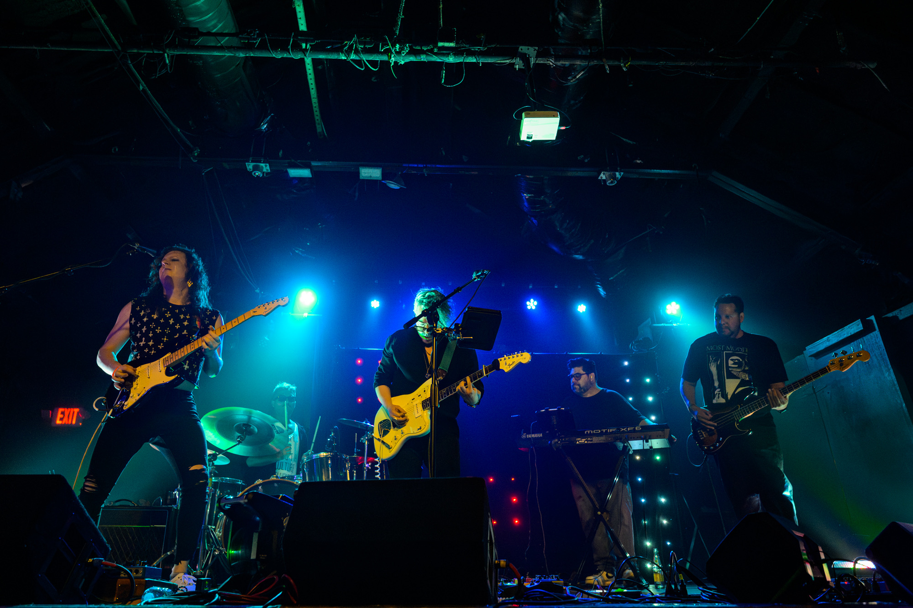

ATX BASED CHANNELING THE SHADOWS OF ALL THE DARKWAVE MUSIC COVERS
You've Lost Control is Austin’s tribute to Joy Division, New Order, Echo & the Bunnymen, and the darkwave
icons of post-punk and new wave.
